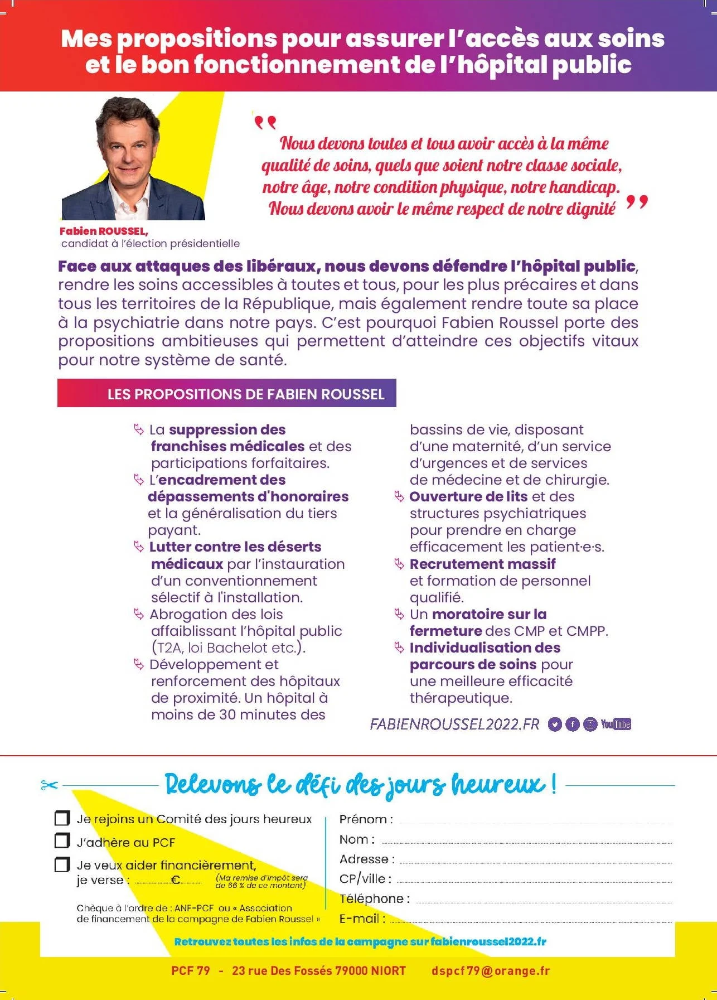

Publication d’archives
Hôpitaux publics, établissements du sanitaire, du médico-social, du social et de l’handicap… Notre santé est…
Date indiquée par Facebook · 16 décembre 2021
Texte conservé avec la publication
Contexte du dossier
Mi-décembre, un message alerte sur le danger touchant hôpitaux, handicap, social et médico-social dans les Deux-Sèvres. Le 24 décembre, la page rapporte la distribution de propositions devant les centres hospitaliers de Niort et du Nord Deux-Sèvres. L’objectif affirmé est une même qualité de soins quels que soient classe sociale, âge, condition physique ou handicap.
Le 6 janvier 2022, la critique des propos présidentiels sur les non-vaccinés commence par une intervention de Pierre Dharréville, député communiste. La publication oppose au mépris la réalité des déserts médicaux et l’inégalité mondiale d’accès aux vaccins. Elle rappelle aussi les lits supprimés et les équipes épuisées, selon ses données de l’époque. La responsabilité politique ne peut être renvoyée aux seuls individus : garantir matériellement l’accès fait partie de la santé publique.


Sources
Archive rouge · export Facebook · AR-0002-FB-01995
À lire aussi · Novembre 2022 : un budget à la hauteur des vies ?